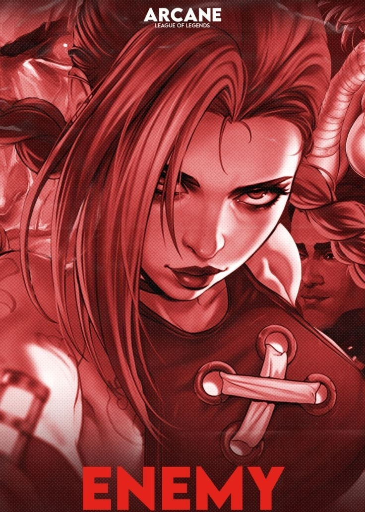

(Look out for yourself)
I wake up to the sounds of the silence that allows
For my mind to run around with my ear up to the ground
I'm searching to behold the stories that are told
When my back is to the world that was smiling when I turned
Tell you you're the greatest
But once you turn, they hate us
Oh, the misery
Everybody wants to be my enemy
Spare the sympathy
Everybody wants to be my enemy
(Look out for yourself)
My enemy
(Look out for yourself)
But I'm ready
Your words up on the wall as you're praying for my fall
And the laughter in the halls, and the names that I've been called
I stack it in my mind, and I'm waiting for the time
When I show you what it's like to be words spit in a mic
Tell you you're the greatest
But once you turn, they hate us
Oh, the misery
Everybody wants to be my enemy
Spare the sympathy
Everybody wants to be my enemy
(Look out for yourself)
My enemy
(Look out for yourself)
They say: Pray it away
I swear that I'll never be a saint, no way
A chair in the corner is my place, I stay
I shake, and I think about the powers at play, the powers at play
And the kids in the dark that were doomed from the start
The child in the basement, face to the pavement
Oh, what a statement, love is embracement
Love is a constant, love is a basis
He cannot be, she cannot be, they cannot be changed
But keep on praying
Goodbye
Oh, the misery
Everybody wants to be my enemy
Spare the sympathy
Everybody wants to be my enemy
Oh, the misery
Everybody wants to be my enemy
Spare the sympathy
Everybody wants to be my enemy
Pray it away, I swear I'll never be a saint, no way
My enemy
Pray it away, I swear I'll never be a saint
(Look out for yourself)